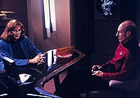
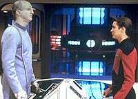
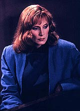

|
MANCHETE
DO EPISDIO
Episdio
mostra parania de Beverly
e traz de volta personagem recorrente
Episdio
anterior | Prximo
episdio
Sinopse:
Data Estelar: 44161.2.
Aps dar as boas-vindas ao seu mentor, o dr. Quaice, um homem idoso
triste pela perda de sua esposa e amigos, a dra. Beverly Crusher
visita seu filho, Wesley, na seo de engenharia da Enterprise.
Wesley est trabalhando em um experimento com o campo de dobra
espacial. Enquanto a doutora assiste o filho trabalhar, um sbito
flash de luz ocorre, e o projeto fracassa.
 De
repente a Dra. Crusher comea a ver os tripulantes da Enterprise
sumindo, um por vez. Alguns permanecem, porm nenhum deles sabe
algo sobre os desaparecimentos. At que a doutora se v sozinha na
nave.
Na verdade, o experimento de Wesley jogou sua me em uma bolha de
dobra, onde ela est vivendo uma realidade criada por seus prprios
pensamentos.
Aps duas tentativas fracassadas de resgatar a doutora, a nica
esperana de recuper-la antes que seus pensamentos a matem a
ajuda do Viajante, um ser que compreende perfeitamente a relao
entre espao, tempo e pensamento. Ele j havia topado com o
pessoal da Enterprise em 2364.
Graas pronta apario do Viajante e a consequente colaborao
entre ele e Wesley, a tripulao consegue tirar Beverly de seu
Universo pessoal.
Comentrios:
"Remember Me" tenta trazer de volta um
personagem recorrente, utilizar as mesmas possibilidades abertas no
episdio "Where No One Has Gone
Before" e mostra uma parania pessoal da doutora
Beverly Crusher. Como se pode ver pelos elementos acima listados, o
resultado final s poderia ser o que foi: um episdio que fala,
fala, fala e no diz nada, por perder seu prprio foco e senso de
propsito.
Se tudo deu certo na primeira apario do Viajante, em um dos
melhores episdios do primeiro ano, agora parece que os produtores
quiseram mostrar como possvel usar mal o personagem.
Ele chega do nada, nem toca no assunto de sua desapario anterior
(em "Where No One Has Gone Before"),
troca algumas idias com Wesley e ajuda o menino-prodgio a tirar
sua me de um fenmeno esquisito em que os pensamentos de Beverly
tornam-se realidade.
 Ou
seja, sua volta pode ser boa para a doutora, mas para o
telespectador, no diz absolutamente nada. E no porque o
personagem no tenha carisma ou personalidade a ser explorada; o
roteiro que no ajuda.
Alis, o episdio uma prova viva de quanto pode ser perigoso e
desinteressante a idia de juntar pensamento, espao e tempo,
quando no h um propsito definido. Quando a idia foi aplicada
em "Where No One Has Gone Before",
o objetivo era mostrar a capacidade da tripulao de controlar
seus prprios pensamentos. Aqui, s serve para desenrolar uma
parania da doutora, que acha que seus colegas de nave esto
desaparecendo.
 Por
incrvel que parea, apesar de o episdio girar 100% em torno de
Beverly, no aprendemos nada de interessante sobre sua
personalidade. S podemos pensar que, em seu ntimo mais profundo,
ela teme ficar sozinha. Mas no h razo para isso. Os escritores
simplesmente cismaram com isso e acharam que dava uma boa histria.
Enganos acontecem.
A histria s no pior graas qumica existente entre os
personagens, que conseguem segurar o episdio somente em seus dilogos
e interaes, dispensando a necessidade de um roteiro mais
interessante ou elaborado.
O nico personagem que sai ganhando Wesley, o que sintomtico.
Vemos que ele d mais um passo em sua caminhada rumo a um destino
diferenciado, como o Viajante havia previsto em sua primeira apario.
A jornada de Wesley seria concluda na stima temporada da srie,
no episdio "Journey's End", que tambm conta com
uma apario-relmpago do Viajante.
Citaes:
Beverly - "If
there's nothing wrong with me... maybe there's something wrong with
the Universe."
("Se no h nada errado comigo... talvez haja algo errado com
o Universo.")
Trivia:
 Este episdio marca a volta do ator Eric Menyuk como o Viajante.
Ele havia participado do episdio "Where
No One Has Gone Before", da 1 temporada, e ainda
voltaria na 7 temporada, em "Journey's End".
Este episdio marca a volta do ator Eric Menyuk como o Viajante.
Ele havia participado do episdio "Where
No One Has Gone Before", da 1 temporada, e ainda
voltaria na 7 temporada, em "Journey's End".
Alguns
dias aps a filmagem deste episdio, Gates McFadden (dra. Crusher)
descobriu que estava grvida.
O
termo "cochrane" utilizado neste episdio. Trata-se de
uma unidade para medir a tenso do campo subespacial. Esse termo,
claro, uma homenagem Zefram Cochrane, o inventor da dobra
espacial.
Aqui
ficamos sabendo que a Enterprise carrega 1014 pessoas, contando com
o Dr. Quaice, que estava a bordo neste episdio.
Ficha
tcnica:
Escrito por Lee Sheldon
Direo de Cliff Bole
Exibido em 22/10/1990
Produo: 079
Elenco:
Patrick Stewart como
Jean-Luc Picard
Jonathan Frakes como William Thomas Riker
Brent Spiner como Data
LeVar Burton como Geordi La Forge
Michael Dorn como Worf
Gates McFadden como Beverly Crusher
Marina Sirtis como Deanna Troi
Wil Wheaton como Wesley Crusher
Elenco convidado:
Bill Erwin como
comandante Dalen Quaice, M.D.
Colm Meaney como tenente Miles Edward O'Brien
Eric Menyuk como Viajante
Episdio
anterior | Prximo
episdio
|